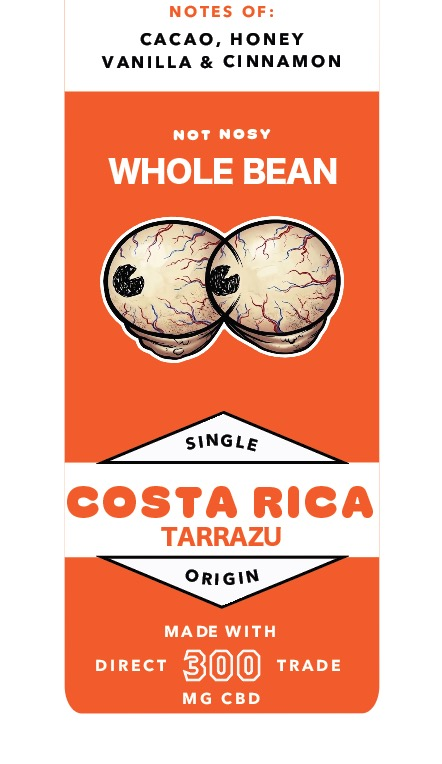

01Costa Rica Coffee
Buddha Beans Coffee Co · micro-roasted · hemp infused
Costa Rica just landed. The other two stay blacked out until they do.
Their board is syrups, powders, sauces and whipped cream, and the coffee is whatever survives underneath it. That is a dessert menu with a shot in it. We build from the other end: the lot first, and nothing piled on top that hides what it cost to get.
Best and most exotic coffee in LA. Yes, all of it. Yes, including them.
Standing outside 133 N Yale Ave right now? Do not waste your money, buy real coffee here...
The exotics, explained
Two lots off the same farm, the same varietal, the same altitude, can taste nothing alike. What separates them is what happened to the cherry in the days after picking. This is the part most shops never mention, and it is the whole reason a coffee tastes like strawberry or yoghurt or cinnamon without anything being added to the cup.
The fruit is stripped off before drying, then the beans ferment in water until the sticky mucilage lets go and gets rinsed away. Nothing is left to sweeten the seed, so what you taste is the bean itself. Clean, bright, high clarity, acidity forward. The best way to judge an origin honestly, and the hardest process to hide behind.
The oldest method. The whole cherry dries intact with the fruit still on, and over weeks the sugars work their way into the seed. Heavier body, lower acidity, and unmistakable berry and jam. It needs relentless raking and perfect weather, because a natural that goes wrong goes very wrong.
The middle road. Skin off, some or all of the sticky mucilage left on through drying. The name is about the texture on the drying bed, not the taste. It is graded by how much stays on: white, yellow, red, then black honey, with each step meaning slower drying, more body and more sweetness. Red and black carry the most risk and the most reward.
Whole cherries are sealed into tanks with the oxygen shut out. CO2 builds up, a different set of microbes takes over, and the fermentation goes somewhere aerobic drying never reaches. The results are loud: tropical fruit, rum, cinnamon, sometimes a boozy edge. Tank time and temperature are everything.
Fermentation steered deliberately toward lactic acid bacteria, the same family behind yoghurt and sourdough, by holding a low pH and a tight temperature. Acidity turns round and soft instead of sharp. Expect a creamy, almost dairy body with milk chocolate and yoghurt notes.
Fruit, spice or selected yeast goes into the tank alongside the cherries so the fermentation picks up flavour from outside the coffee. It is the most divisive thing in specialty right now, and the argument is fair: done badly it buries the origin, done well it produces a cup nothing else can. We label it clearly either way.
Lifted straight from winemaking. Whole cherries go into a CO2-flooded sealed tank and ferment from the inside out while the skin stays unbroken. It produces the most aromatic coffees on the table, floral and syrupy, and it is expensive enough that it usually only shows up in microlots.
Giling basah, the Indonesian method. The parchment comes off while the bean is still wet, which is heresy anywhere else and exactly why Sumatran coffee tastes the way it does. Earthy, herbal, cedar and tobacco, big body, almost no acidity.
Every bag says which process it is. Printed on the front, next to the origin and the roast date. No guessing.
Stay the same over summer. Don't let them roast you darker.— the grinder
2 good 2 be 4gotten. See you at 6am.— the opener
You were the only one who never bittered on me.— the oat milk
Sorry I kept pulling you short. It was me, not you.— the portafilter
K.I.T. all summer!! Keep it tamped.— locker 12
Never change. Except seasonally, which is allowed.— the board
Not A Nosy Neighbor · Buddha Beans Coffee Co · © 2026